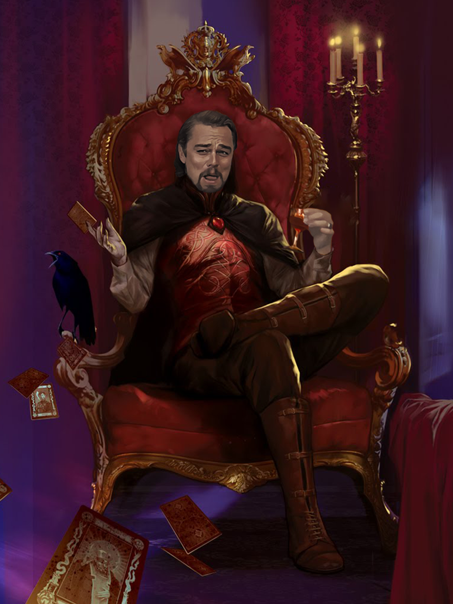

1 Welcome Adventurer, have some wine
Strahd is an utter bellend, as you can see below:

The bellend, Strahd von Zarovich
1.1 Wait wtf, is this D&D beyond?
No! This is just me fucking around with something called Rmarkdown to make a website for my future D&D setting. It’s entirely created by me and published for free on GitHub.
1.2 Ok so what actually goes here?
This page will be a preamble and then a contents page to guide people to the content they actually want to find.
1.3 Then what?
Then an intro covering what this book is and how to use it
- A High fantasy setting
- Pitching powerful nations in a struggle for power
- Strong varied archetypes unlike any other setting
- A mix of familiar settings from the likes of Arthurian Legend, Norse Mythology, Tolkeinien fantasy, and classic D&D flavour, mixed in with references from videogames and other pop culture, and totally original ideas, all combined together